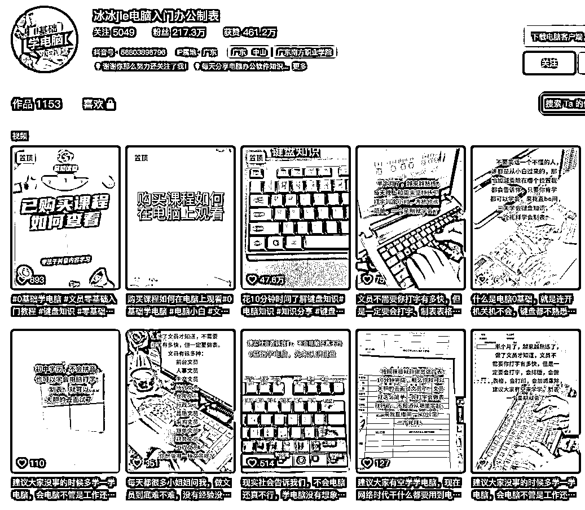
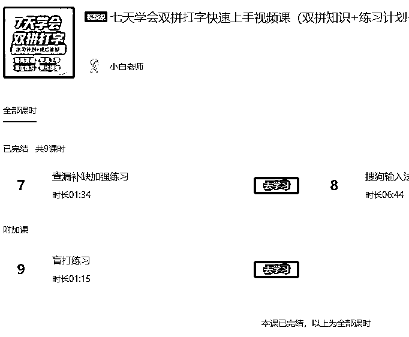
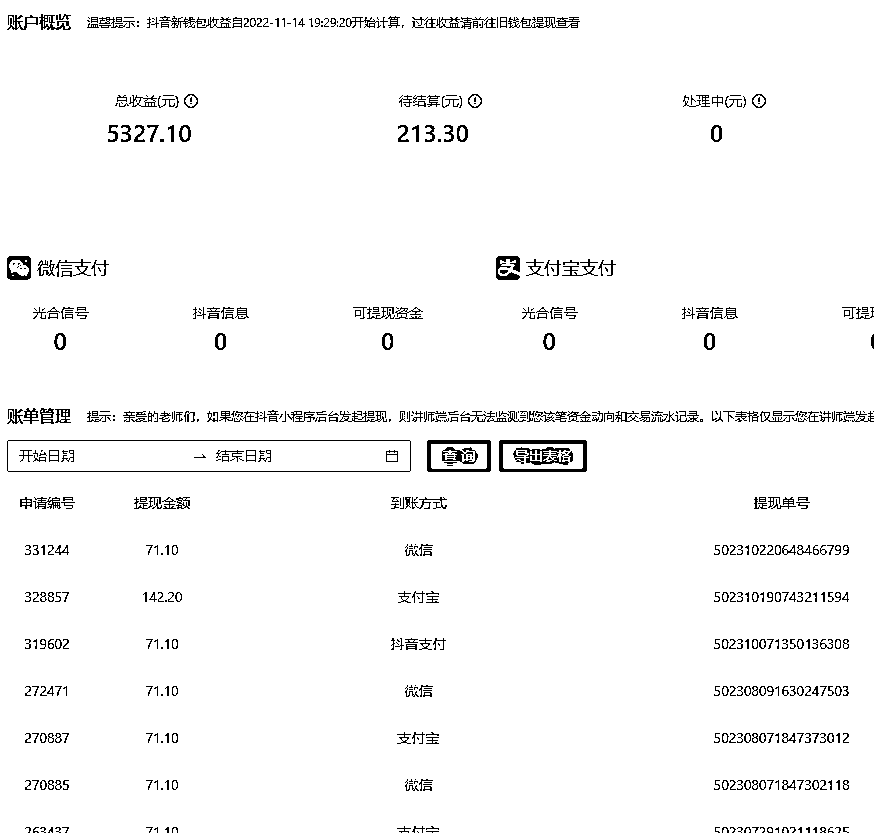

来源：https://u0yrmcie7v.feishu.cn/docx/CEsrdNmH4oZCefx3BuwcxjFunTe
大家好，我是西昂。
去年这个时候，我参与了生财的抖音ip大航海2.0，当时我们的主题是做课卖课。时隔一年，我来做一下分享，希望能给大家带来一些启发。
1、刚开始跟航海的时候，我们都不知道应该做什么课，也不知道怎么卖课。
完完全全是跟着航海来做，21天时间也没有做出什么成绩。当时，我选的是EXCEL课程，想通过发布excel的教学视频来吸引用户，然后代销其他人的课程。但是，整个航海期间都没有任何的结果。
不光视频播放量低，直播也没人看。我还记得，对着直播间两个人是多么的煎熬。
2、我在抖音搜索excel，然后看到直播栏目下至少有30+个直播间在讲excel，于是我悟了，我干不过他们，溜儿溜了。
当然，航海也不是没有收获，首先知道这个事情是可以赚钱的，其次是看过了很多卖课的账号，你会发现卖课也没有那么困难。
在刷对标账号的时候，发现一个带课很猛的大姨，我估计是50多岁。一个月的销售额是50多万，分成是98%。当时我和你现在的表情一样，惊呆了。
我发现她主要讲的并不是excel，而是教你如何认识键盘按键？你能想象吗？一个50多岁的人，教你键盘指法、按键方式。（就是下面这个号）。

我看了几场直播以后，感觉自己也能干啊！于是乎，就开始拍视频！学直播话术！一顿操作猛如虎，一看播放一千五。黑粉一顿喷：这也用你教？傻子才用学……
3、所以，心态不好一定做不好抖音。你不知道看你视频的是人是狗。
1、于是，又换了一个特别特别细分的赛道：双拼打字。
这个厉害喽，因为我发现教这个的，没几个人。掰手指数数，不超过10个。还有很多断更的，看看他们的销量，哦哟，也还可以嘛。一个月卖3w左右，纯利润嘛~
于是乎，我的小脑筋又开始活动了。
但是……遇到一个很重大的问题。这玩意——我不会！
不会咋办，学呗。反正自己平时也经常用电脑，那么就开始搜集资料。
于是，我利用百度、谷歌、必应多个搜索引擎，搜集了大量的资料（其实也没多少。），包括各种练习教程、练习软件等等。然后，我就开始自己练习双拼打字。
你还别说，还真不好练。
前三天，我感觉这玩意，太难了。我学不会啊~
但一想，我只要学会了，立马行业前三。又开始闷头练习。
一周后，我终于将双拼按键的键位记得差不多了，速度也从20+上升到了40+。
于是，我觉得，我又行了。开干，我玩的就是真实！
视频让我露脸拍，我是不好意思的。那么我可以自己做视频，剪映咱还是会玩的。录制自己的屏幕，讲解双拼打字的基础知识，嗷哟，有人问，咋学？！
这不看见光明了么？正反馈！看得见摸得着的正反馈。
然后，我就引流到微信，给他讲咋学，咋收费。就这样，再没有任何课程的情况下，收了3笔学费，合计297元。
妈妈，我突破了0-1啊~
于是，我继续练，继续引流。但是，总用微信发视频，它不够便捷啊。我开始研究如何上学浪，你还别说，航海资料里全都有！于是乎，很快我就开通学浪了。然后录了9个视频，就可以卖啦！啦！

学浪+橱窗，每天躺着就发现出单了。（共收入5000左右，店铺注销了没有记录啦~）
于是，我就尝试直播，完蛋，不会说。变成扯闲篇了。
我发现，我不太适合直播，情绪和逼单都不会做。感觉好像骗人一样，于是索性放弃了直播，专心做视频。
学浪用着用着就发现，他有个评分，我出单少，这个分数一直上不来，还有时候清退我。于是，我就又开始上架小程序了。
然后用小程序来进行课程的售卖。小程序虚构了很多销量和评价，至少让人看起来是那么回事了。不至于说，哎呀，你都没销量，装什么大尾巴狼。
后面我就开始抄爆款文案、自己写脚本，然后用魔音进行配音，剪映剪辑，基本上半小时搞定视频，发布后等着出单就行了。于是这样躺平式的卖课教学，经过了近一年的时间，收入也破万了。哈哈，万元户就是我！

1、航海是相当有用的！航海资料是相当有用的！海航后的持续操作也是相当有用的！
2、打不过同行的时候，可以换个其他的同行，总能找到那个弱下的下手。嘿嘿~
3、不会的东西不要怕，学就完了。很多东西，没有想象的那么困难的。
4、找到自己的优势、劣势，别在劣势上玩命。越玩命越劣势。
欢迎交流，个V: tixiangs